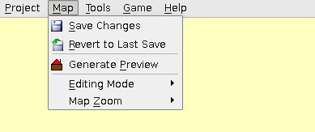

[User Interfaces]->[Main Window]->[Menu Bar]->[Map]

- Save Changes:
- Saves any changes made to the currently open project.
- Revert to Last Save:
- Discards any changes made and loads the last saved data.
- Generate Preview:
- Opens up a new window with a preview of the full map, which can then be saved as a seperate image file.
- Editing Mode:
- Changes the editing mode. Select from either lower layer, hero layer, upper layer, or event layer.
- Map Zoom:
- Changes the zoom ratio of the map view. Select either 1/1, 1/2, 1/4, or 1/8.